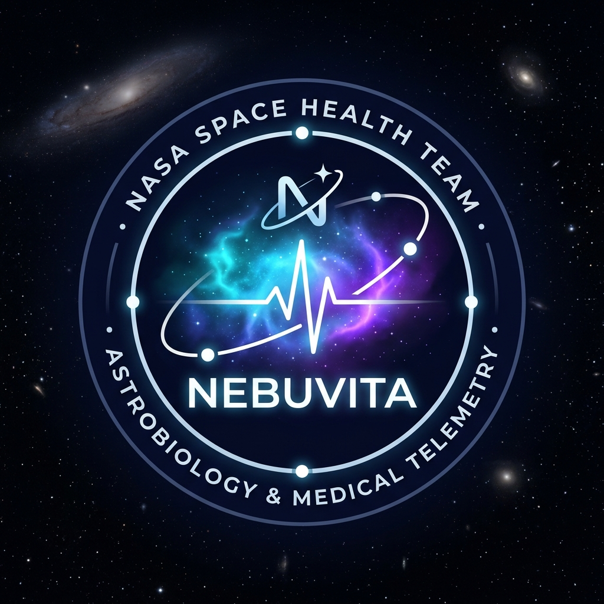

TRUSTLINE
NASA Artemis
🚀 Astronaut Portal
🩺 Medical Officer Portal
🛰️ Administrator Mission Control
00:00:00 UTC
WEBSOCKET
MODE: OPERATIONAL
Astronaut (AST-001)
Flight Surgeon (Lead)
Mission Admin (Chief)